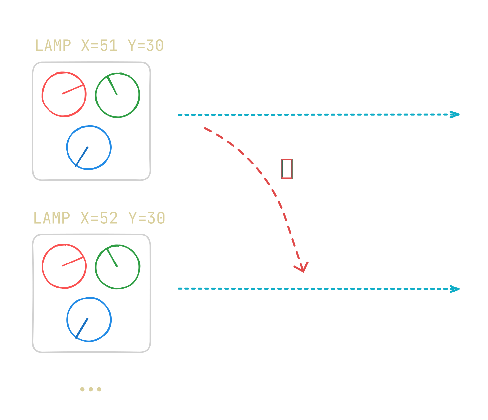

Why a CPU Is Not Enough
This article is part of Graphics From Scratch, a series of articles on computer graphics. Start from the beginning if you want to know what's going on.
Have you ever wondered how your computer draws different shapes and images tens of times a second? Ever wondered how video games render life-like scenes in real-time, or how your operating system draws its windows?
Before We Start
You're gonna see some pseudocode similar to the Python
programming language, but you don't need to actually code anything or know
how to code. We'll get to actual coding a few articles later, at which point
I'll help you get started if you're not a programmer already.
Encoding Video Signals
You might already know that your computer needs a GPU, graphics processing unit, to draw stuff onto the screen, but why's that the case? Can't we just use the CPU to achieve the same thing? Well, not really. Firstly, your monitor needs some sort of input signal to display anything. Some use HDMI ports, older ones might use VGA, and so on. These interfaces have different protocols that specify how the input signal should be encoded. So how do we send image data from our CPU to the display device? One idea might be to just write some software for the CPU implementing a video protocol and somehow connecting the display device to the CPU. But, as it turns out, this method is really inefficient because the CPU needs to spend most of its time encoding the video signal, and this gets worse if there's only a single core, as was common in the early days of computers.
A better method is to use an entirely separate device to encode the video signal, such that the CPU sends raw image data to that device and continues to work on other stuff while the device can freely spend all of its time encoding the video signal and sending it to the display device. Said device is what we call a graphics card. Note that it doesn't necessarily need to have fancy rendering features and ray tracing cores. Just taking raw pixel data and encoding them into a video signal is enough to be called a graphics card.
Updating Millions of Pixels in Parallel
Video signal encoding was the first reason to make graphics cards, but then, we quickly realized that we need a lot of parallelism to draw even simple 2D graphics. More specifically, we need to run the same instructions on all pixels at once, like a nested for loop. Take a look at this pseudocode.
class Color:
red: float
green: float
blue: float
...
def calculate_pixel_color(x: int, y: int) -> Color:
...
for y in range(HEIGHT):
for x in range(WIDTH):
pixels[y][x] = calculate_pixel_color(x, y)
Notice how the calculate_pixel_color() function only depends on
the coordinates of the pixel it needs to shade and is independent from
everything else. This independence is key to parallelism, and to help you
better understand why that's the case, let's look at the following pseudocode.
def calculate_pixel_color(x: int, y: int) -> Color:
return new Color(
x * y,
80,
x + y
)Suppose our image has 200 pixels in the horizontal direction and 100 in the vertical direction. Now, imagine we have 200*100=20,000 RGB lamps each with 3 knobs (for the red, green, and blue intensities) in a huge field, and a tireless worker for every single lamp. Every worker knows the exact coordinates of his lamp. "Tune the red knob until it shows the product of the X and Y coordinates of your particular lamp.", we say to the workers. Then, we tell them to tune the green knob to 80, and finally we tell them to add the X and Y coordinates of their lamp and adjust the blue knob to the resulting value. Our workers are really fast and they perform these instructions in just a few milliseconds.
To really pinpoint what we mean by independent instructions, we tell the workers to sum up all the values from their neighbors and embed the result in their own lamps, at once. Standing still, they look all confused. "What order do we start in? How can I sum up the values from my neighbors if they also need to sum up the values from their neighbors, which includes me?! You have lost your mind, we can't do this all at once!", they say. And they're in the right. What we asked them was to perform a calculation on each lamp in parallel where the calculation depends on the other lamps.
All of this is to say, parallelism matters a lot, and, if we can find a way to parallelize our instructions instead of running them on each pixel one-by-one, we can run them a lot faster.
Or, can we?
Shaders
You might have already guessed that a CPU can't really perform the same instruction on dozens of pixels at once. Sure, modern CPUs have multiple cores and SIMD, but they're not quite fast enough to render realistic scenes at 60 frames per second. This led to the creation of shaders on graphics card, which let you run the same instruction on all pixels at once. Well, it's a bit more complicated than that, and there is still some amount of serial work, but for the sake of simplicity, you can assume all pixels are processed at once.
So, is this all a GPU does? Run shaders and encode video signals? In reality, there are a lot more things your GPU is responsible for which we'll explore in future articles. For now, you can safely assume a GPU just executes parallel instructions on the pixels of an image and encodes it into a video signal.
In the next article, we'll learn how one can make a very simple gradient shader from scratch.